Private Company Access is a Citi initiative that facilitates high-value connections between investors and businesses through curated events. The brief was to develop a campaign identity that could flex across OOH advertising, event environments, presentations and print — giving the programme a distinct visual personality that felt premium, contemporary and true to its purpose.
Three creative routes were developed, each rooted in a different conceptual idea and visual language. For routes one and two, I used Midjourney to rapidly explore and develop AI-generated hero imagery, iterating on visual directions before refining the strongest outputs into campaign applications. Below is an overview of each route and the thinking behind it.
The right partnerships just flow. It's when everything from conversations to decisions feel as though they're made in synchronicity. This route uses iridescent, liquid chrome 3D forms to visualise that sense of fluid momentum — the feeling of two forces moving as one. I used Midjourney to develop and iterate on the hero imagery, exploring the visual language of flow and synchronicity through AI generation before selecting and refining the strongest outputs. The abstract imagery is dynamic yet refined, lending the campaign energy without sacrificing the premium positioning the brand requires. Key copy leans into the metaphor: Be in full flow. Together.
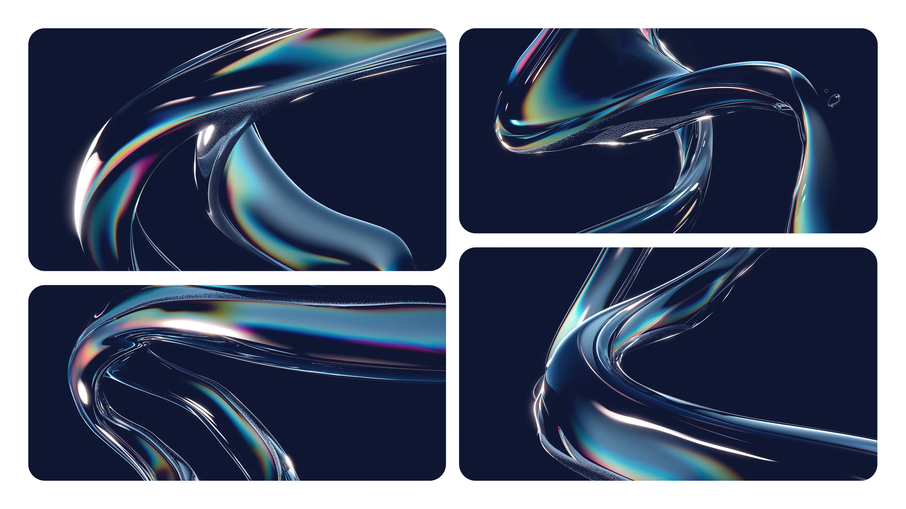
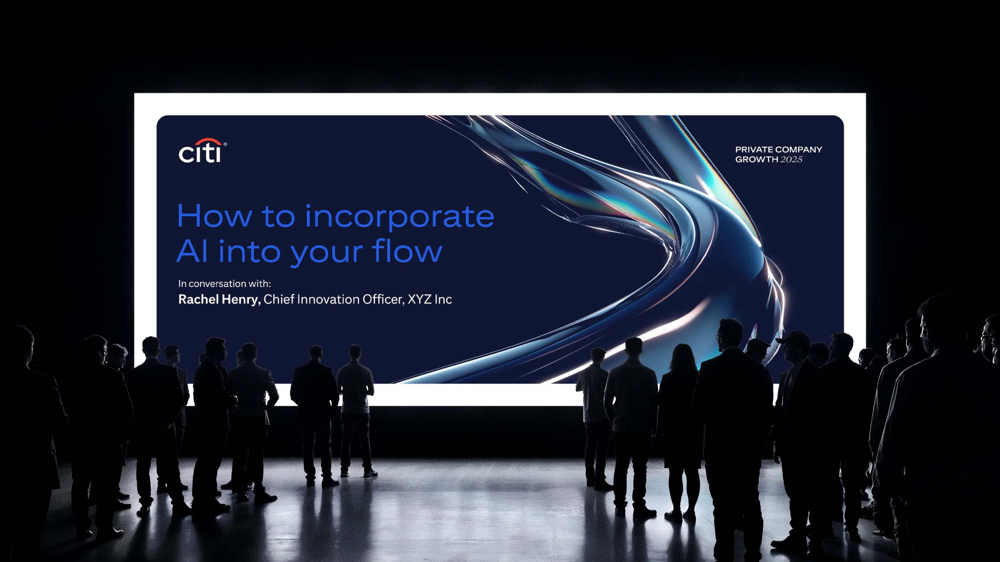
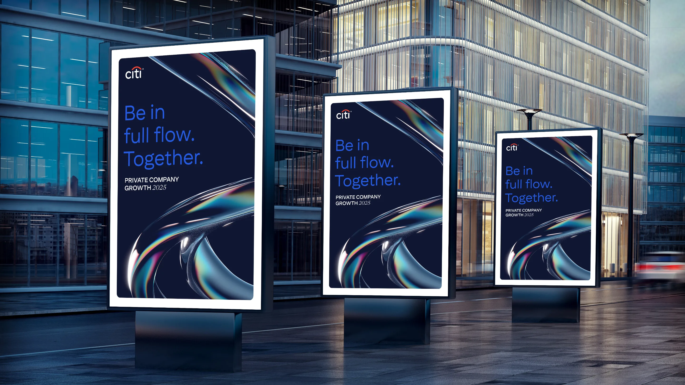
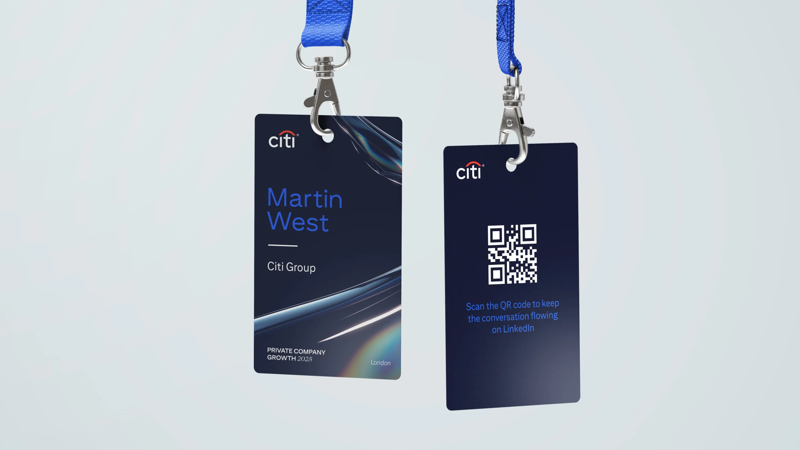
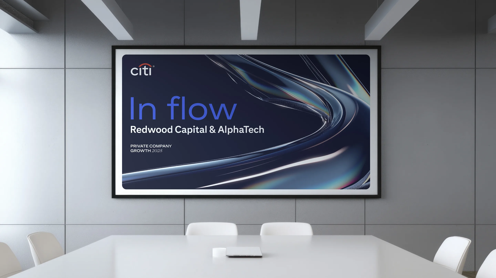
Close partnerships are charged with potential that can deliver incredible results. This route visualises proximity and depth through abstract spherical forms — glowing orbs that suggest two bodies drawing towards each other, charged with energy and possibility. As with route one, Midjourney was used to generate and iterate on the hero imagery, rapidly exploring different expressions of closeness and connection before landing on the glowing, gradient-rich aesthetic. The palette of pink, purple and blue creates a sense of warmth and ambition. Copy drives the closeness metaphor throughout: Grow closer. Growing a closer network.
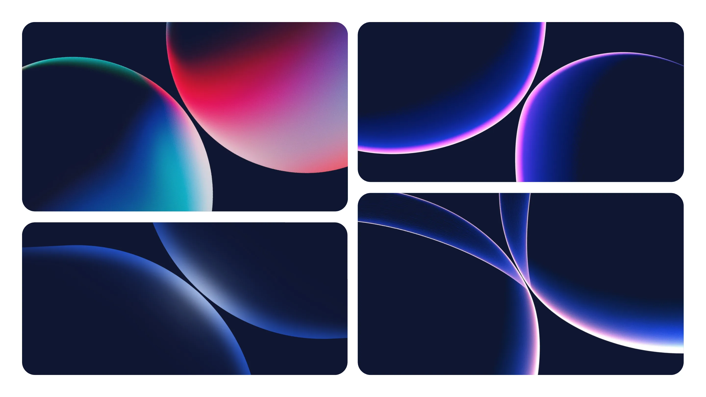
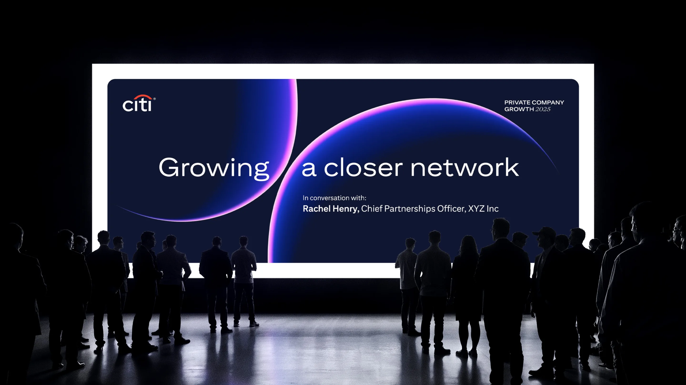
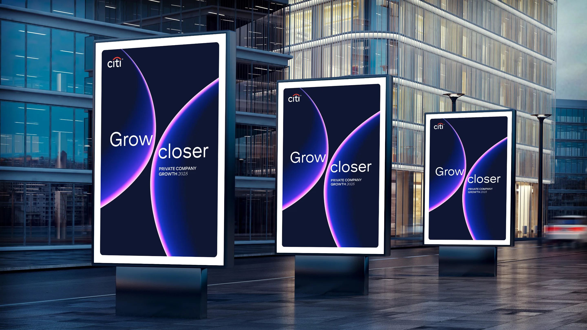
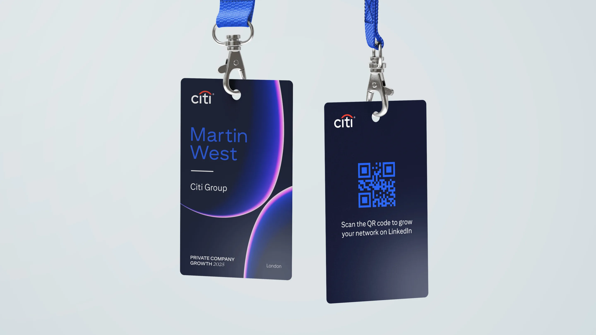
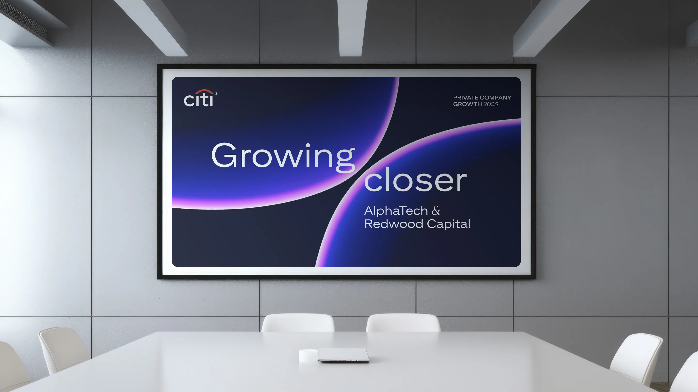
In any industry, spotting opportunity comes from connecting the dots in new ways. This route takes a bolder, more graphic direction — using bold interlocking blob shapes that suggest two things finding their natural fit. The flat, high-contrast palette of navy, blue and white makes it highly distinctive at scale, standing apart from the category while retaining Citi's authority. Copy reflects the concept directly: Connecting out-thinkers. Connecting vision to venture capital.
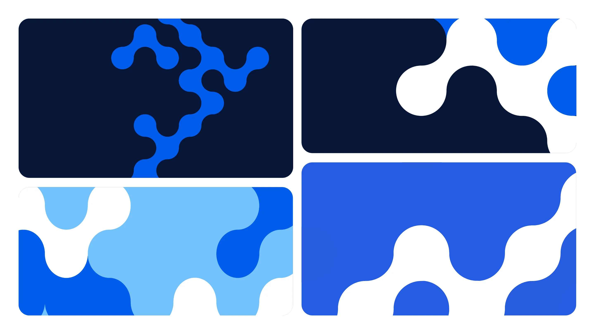
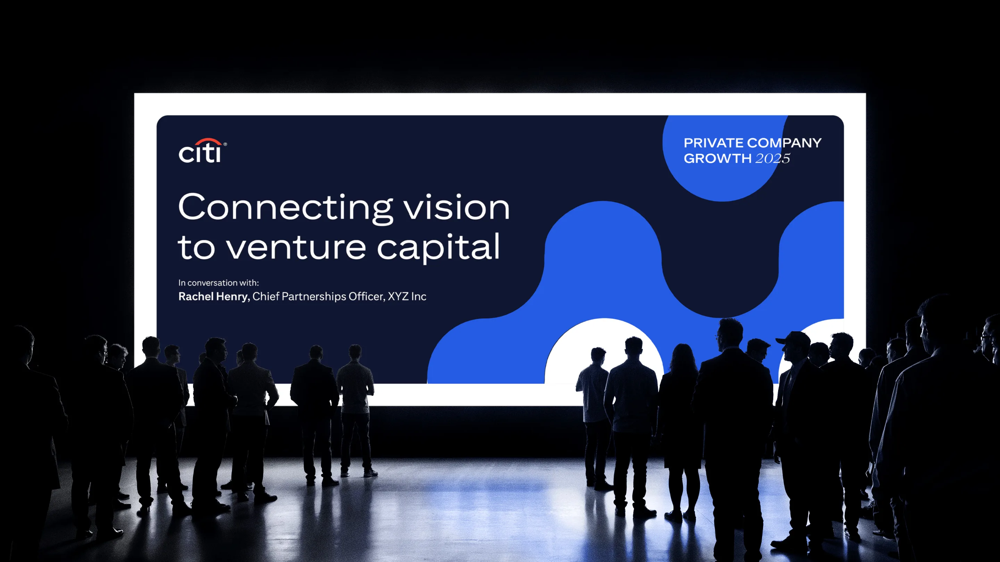
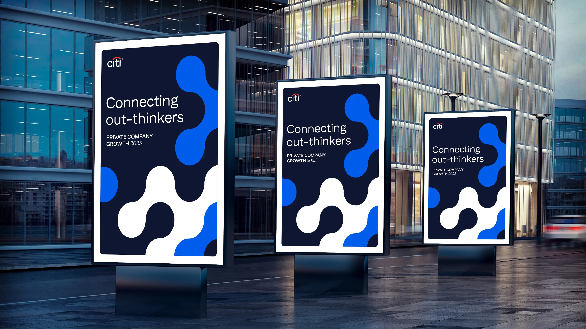
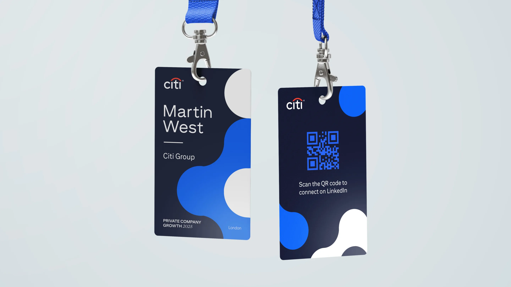
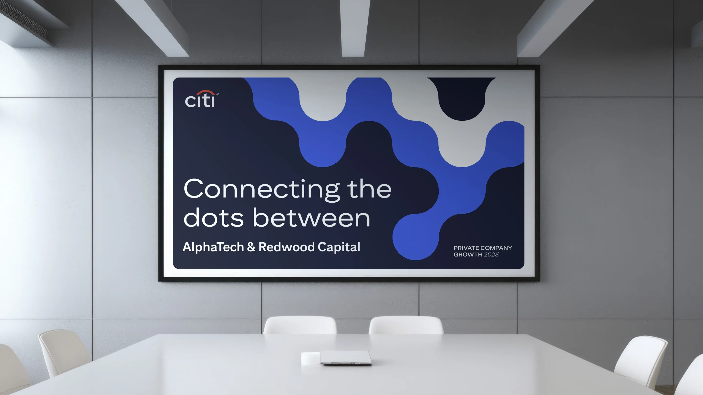